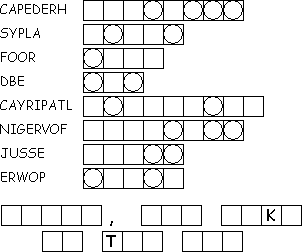
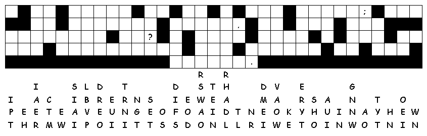

This week's lessons: Isaiah 43:18-25 Psalm 41 2 Corinthians 1:18-22 Mark 2:1-12
This
week's lessons: Isaiah
43:18-25 Psalm
41 2
Corinthians 1:18-22 Mark
2:1-12
Middle-School Pew-work
|
In The Small Catechism, Martin Luther answered the question “What is the Office of the Keys?”, like this: The Office of the Keys is that special authority which Christ has given to His church on earth to forgive the sins of repentant sinners, but to withhold forgiveness from the unrepentant as long as they do not repent. How would you explain Confession and Forgiveness? _______________________________________________________________________________________________________________________________________________________________________________________________________________________________________________________________________________________________________________________________________________________ |
 |
Created by Puzzlemaker at DiscoverySchool.com
Next week's lessons: 2 Kings 2:1-12, Psalm 50:1-6, 2 Corinthians 4:3-6, Mark 9:2-9